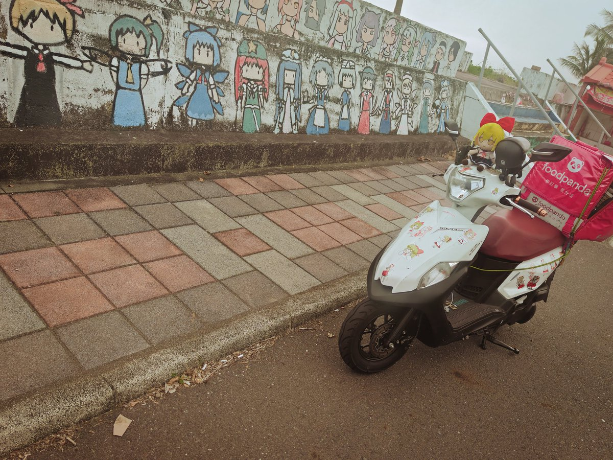
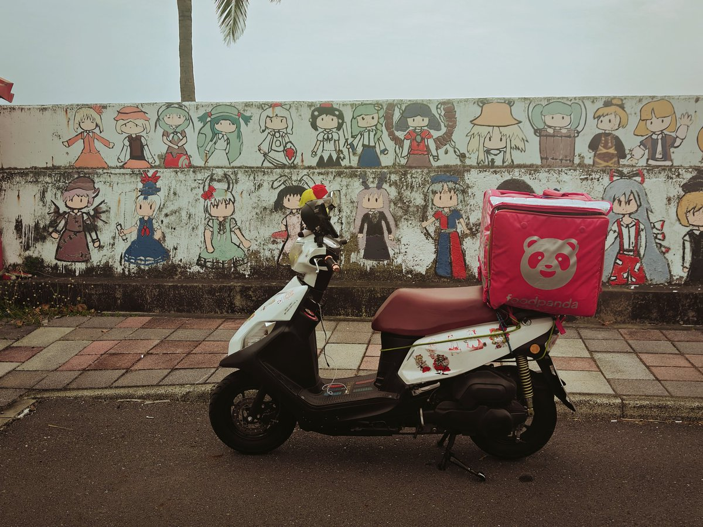

Stargazer 8964
@SHUGE0731
RT @kog6666: 剛知道fumo spots這個fumo 網站然後就馬上衝去東方牆給我的冴月麟號跟冴月麟fumo 拍照然後上傳到這個網站
介紹說這個網站這個網站是收集了全球的東方的fumo 在全球的旅行的照片，用戶可以自行自己的fumo照上傳到這個網站分享打卡類的類似旅…


凱哥
@kog6666
剛知道fumo spots這個fumo 網站然後就馬上衝去東方牆給我的冴月麟號跟冴月麟fumo 拍照然後上傳到這個網站
介紹說這個網站這個網站是收集了全球的東方的fumo 在全球的旅行的照片，用戶可以自行自己的fumo照上傳到這個網站分享打卡類的類似旅遊日誌的東西，也可以看全世界的每個國家的fumo的旅遊照 https://t.co/wrQM5xLocn